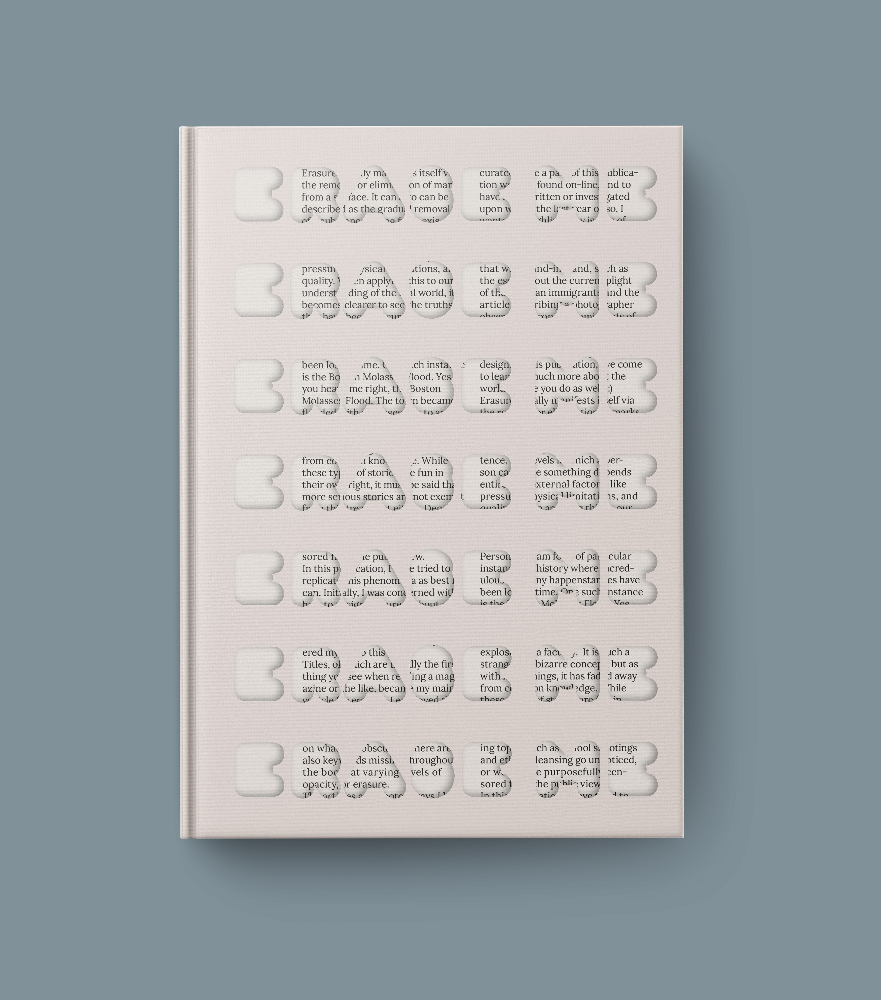
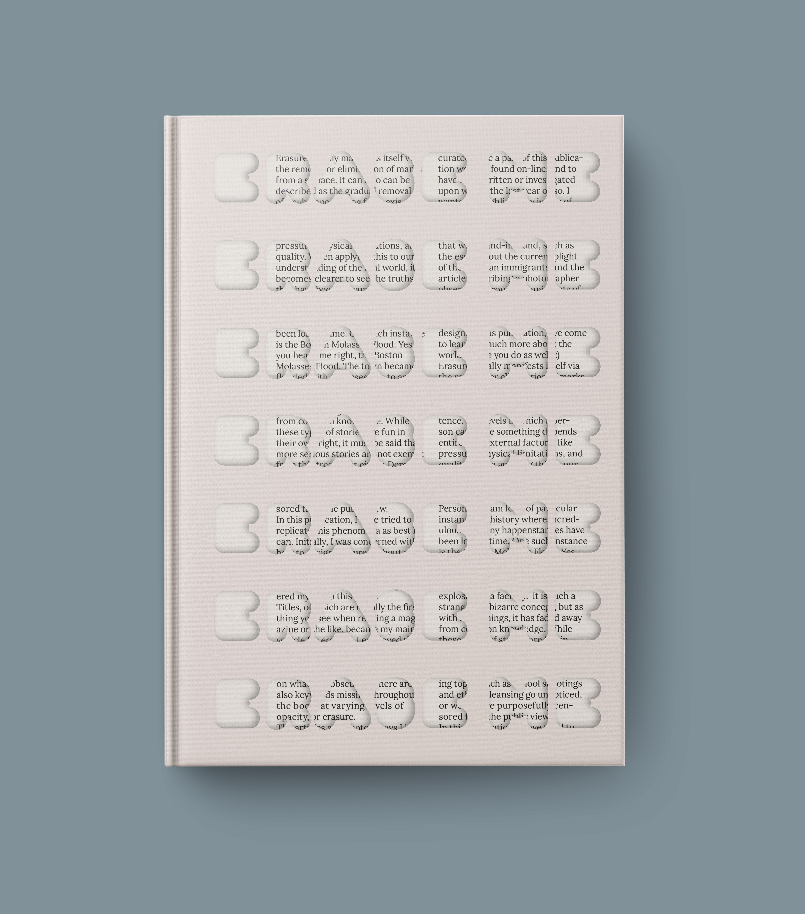
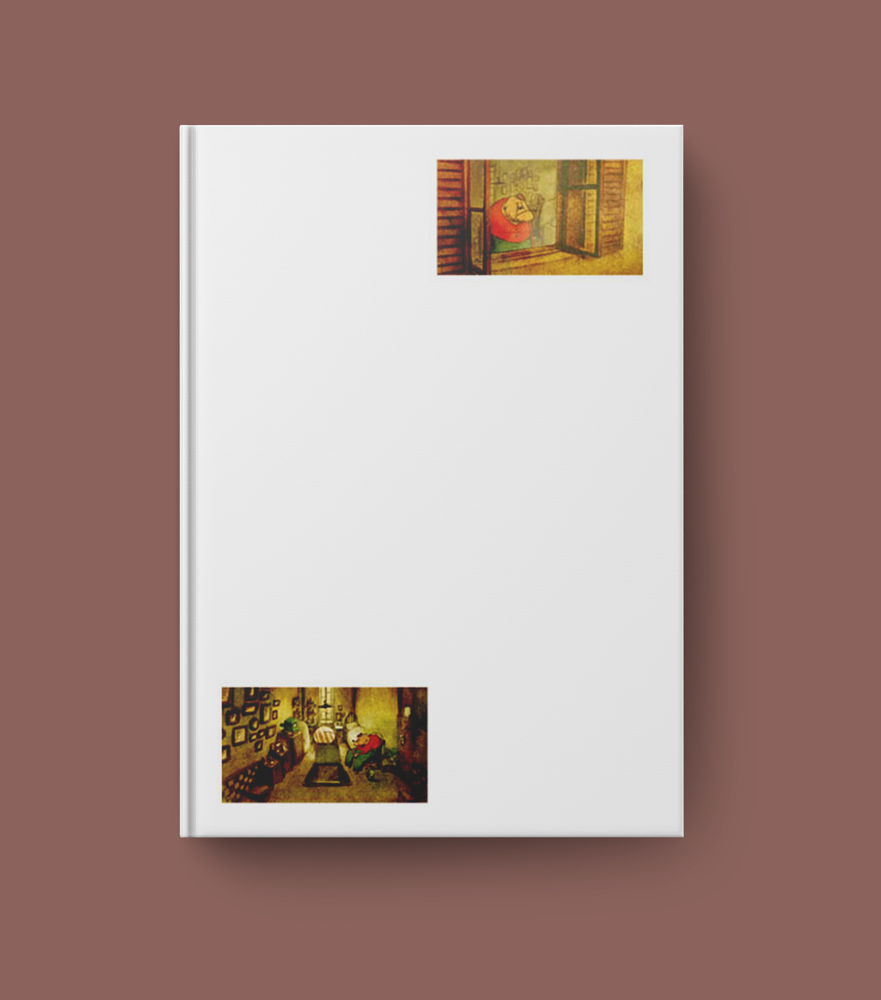
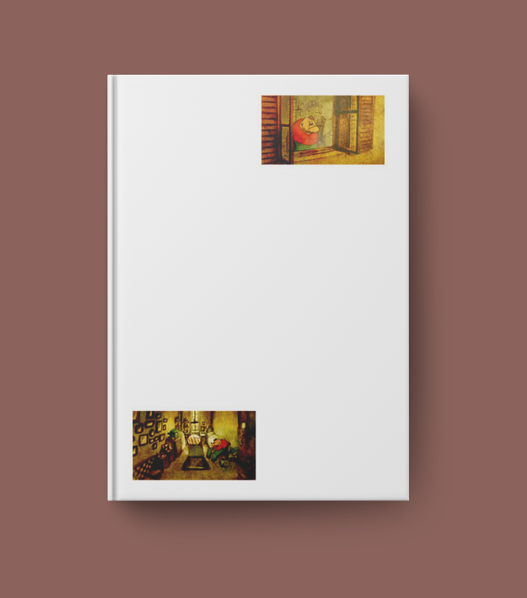
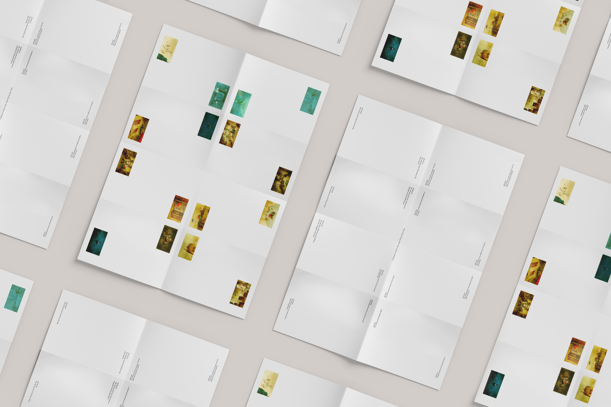

Martina Gallo
Martina Gallo
Three Beige Books
An editorial series of books about erasure, loneliness, and shared differences


Three Beige Books is an editorial series about erasure, loneliness, and shared similarities. Each central concept was curated based on an item or idea, which later informed each book's design and content. In order, they are "Erase Me", "At Night, Alone", and "Behold! I've brought you a man!"
 



This publication was inspired by a mundane, everyday object: an eraser. You might erase something in order to clean marks, remove mistakes, or completely start over. However simple, the act of erasing is also part of our ability to comprehend language. Erasing words erases speech, therefore, it is just as important to understand how and why certain things are removed from a narrative. This book is centered around multiple acts of erasure—and whether each was purposeful (ie. censorship), inevitable (erosion), or accidental (mistakes).
 



This publication is centered around physical manifestations of isolation and loneliness. So much art has been (in)famously borne from suffering from solitude. While so much media surrounding reclusion is bleak, there are positives to reserving time for oneself away from the noise of the outside world.
Behold! is a publication founded around the phrase “Same, But Different”. As part of our brain's ability to keep us alive, we cultivate the skill of recognizing patterns, even if at that moment, they aren't at the forefront of our minds. Finding similarities between different people, places, things, etc. is a fleeting connection, but often yields interesting matches.